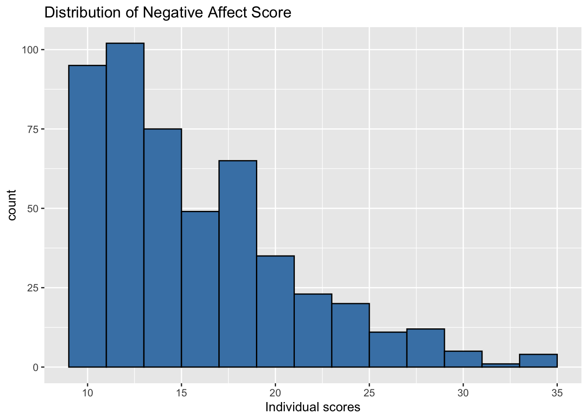
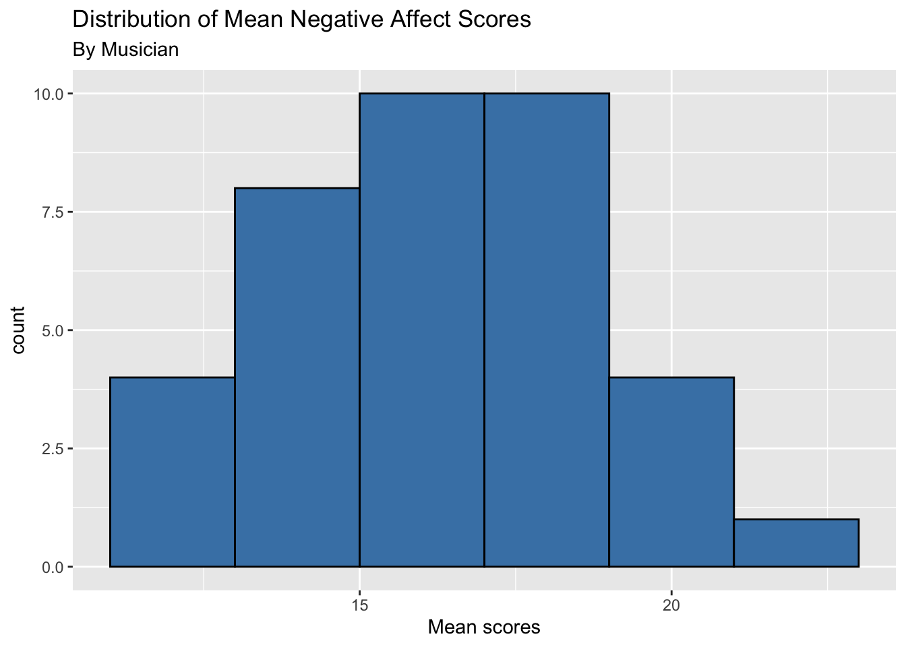

library(tidyverse)
library(tidymodels)
library(knitr)
library(patchwork)AE 15: Introduction to Multilevel Models
Important
Go to the course GitHub organization and locate your ae-15- to get started.
The AE is due on GitHub by Thursday, December 01, 11:59pm.
Important
The AE is due on GitHub by Thursday, December 01, 11:59pm.
music <- read_csv("data/musicdata.csv") |>
mutate(orchestra = if_else(instrument == "orchestral instrument", 1, 0),
large_ensemble = if_else(perform_type == "Large Ensemble", 1, 0))Part 1: Univariate EDA
- Plot the distribution of the response variable negative affect (
na) using individual observations.
ggplot(data = music, aes(x = na)) +
geom_histogram(fill = "steelblue", color = "black", binwidth = 2) +
labs(x = "Individual scores",
title ="Distribution of Negative Affect Score")
- Plot the distribution of the response variable using an aggregated value (or single observation) for each Level Two observation (musician).
music |>
group_by(id) |>
summarise(mean_na = mean(na)) |>
ungroup() |>
ggplot(aes(x = mean_na)) +
geom_histogram(fill = "steelblue", color = "black", binwidth = 2) +
labs(x = "Mean scores",
title = "Distribution of Mean Negative Affect Scores",
subtitle = "By Musician")
How do the plots compare? How do they differ?
What are some advantages of each plot? What are some disadvantages?
Part 2: Bivariate EDA
- Make a single scatterplot of the negative affect versus number of previous performances (
previous) using the individual observations. Usegeom_smooth()to add a linear regression line to the plot.
# Add code- Make a separate scatterplot of the negative affect versus number of previous performances (
previous) faceted by musician (id). Usegeom_smooth()to add a linear regression line to each plot.
# Add codeHow do the plots compare? How do they differ?
What are some advantages of each plot? What are some disadvantages?
Part 3: Level One Models
Code to fit and display the Level One model for Observation 22 is below.
id_22 <- music |>
filter(id == 22)
linear_reg() |>
set_engine("lm") |>
fit(na ~ large_ensemble, data = id_22) |>
tidy() |> kable(digits = 3)| term | estimate | std.error | statistic | p.value |
|---|---|---|---|---|
| (Intercept) | 24.500 | 1.96 | 12.503 | 0.000 |
| large_ensemble | -7.833 | 2.53 | -3.097 | 0.009 |
Code to fit the Level One model and get the fitted slope, intercept, and \(R^2\) values for all musicians is below.
# set up tibble for fitted values
model_stats <- tibble(slopes = rep(0,37),
intercepts = rep(0,37),
r.squared = rep(0, 37))
ids <- music |> distinct(id) |> pull()
# counter to keep track of row number to store model_stats
count <- 1
for(i in ids){
id_data <- music |>
filter(id == i)
level_one_model <- linear_reg() |>
set_engine("lm") |>
fit(na ~ large_ensemble, data = id_data)
level_one_model_tidy <- tidy(level_one_model)
model_stats$slopes[count] <- level_one_model_tidy$estimate[2]
model_stats$intercepts[count] <- level_one_model_tidy$estimate[1]
model_stats$r.squared[count] <- glance(level_one_model)$r.squared
count = count + 1
}Part 4: Level Two Models
# Make a Level Two data set
musicians <- music |>
distinct(id, orchestra) |>
bind_cols(model_stats)Model for intercepts
a <- linear_reg() |>
set_engine("lm") |>
fit(intercepts ~ orchestra, data = musicians)
tidy(a) |>
kable(digits = 3)| term | estimate | std.error | statistic | p.value |
|---|---|---|---|---|
| (Intercept) | 16.283 | 0.671 | 24.249 | 0.000 |
| orchestra | 1.411 | 0.991 | 1.424 | 0.163 |
Model for slopes
b <- linear_reg() |>
set_engine("lm") |>
fit(slopes ~ orchestra, data = musicians)
tidy(b) |>
kable(digits = 3)| term | estimate | std.error | statistic | p.value |
|---|---|---|---|---|
| (Intercept) | -0.771 | 0.851 | -0.906 | 0.373 |
| orchestra | -1.406 | 1.203 | -1.168 | 0.253 |
Part 5: Distribution of \(R^2\) values
ggplot(data = model_stats, aes(x = r.squared)) +
geom_dotplot(fill = "steelblue", color = "black") +
labs(x = "R-squared values",
title = "Distribution of R-squared of Level One models")